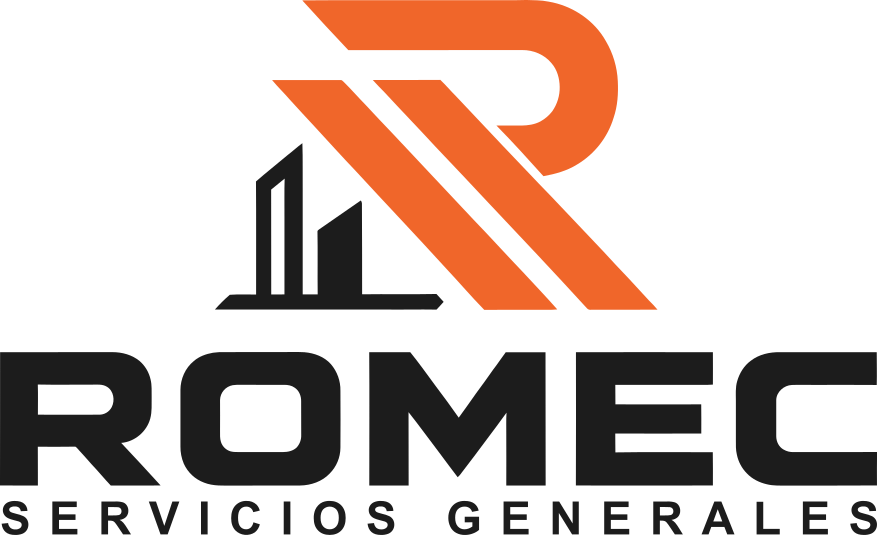

Construcción de viviendas
Edificación de viviendas y ambientes, desde la obra gruesa hasta los acabados.

Construcción y ejecución de infraestructura civil para proyectos particulares e industriales, con planificación, criterio técnico y seguimiento en obra.

Edificación de viviendas y ambientes, desde la obra gruesa hasta los acabados.
Obras de drenaje y conducción de agua para predios e instalaciones.
Cimientos, losas y elementos de hormigón ejecutados con criterio técnico.
Planificación y ejecución coordinada de la obra completa.
Pintura y terminaciones para dejar la obra lista para su uso.

Cuéntanos tu requerimiento y preparamos tu cotización.